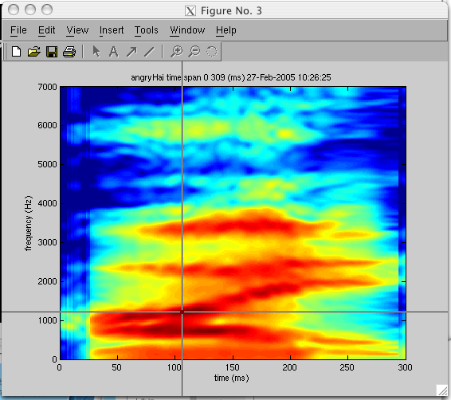
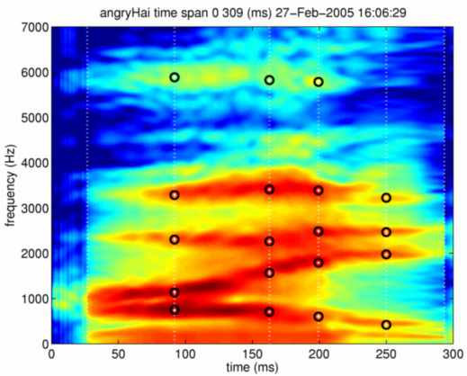
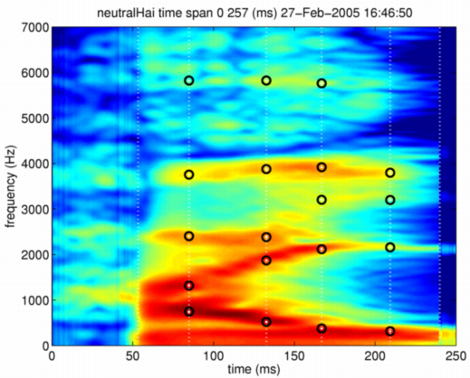

| | Example: anchor selection | Contents | Index |
This section illustrates how to set anchor points using a real example. A built in Matlab function ginput is employed for interactive selection. An object information display function displayMobject is designed to assist this interactive anchor point setting. The following command displays a STRAIGHT spectrogram of a M-object. (The speech material is the same one that was used in ICASSP'2003 paper.)
displayMobject(angryHai,'spectrogram','angryHai');
The next step is to set an appropriate view referring information displayed on the title line of the display. Then, by invoking function ginput the initial part of the interactive anchor point selection is initiated.
axis([0 300 0 7000]) rawanch = ginput
The information display with cross hair cursor is shown in the following figure.

You can set anchor points by clicking mouse button when cross hair cursor is located at each proper point. Please continue this operation while candidate anchor points are left unmarked. This operation is terminated when a key on the keyboard is pressed. This termination operation gives the following output for example.
>> rawanch = ginput
rawanch =
1.0e+03 *
0.0266 -0.5424
0.2934 -0.6243
0.0916 0.7471
0.0923 1.1360
0.0916 2.3026
0.0923 3.2851
0.0916 5.8845
0.1621 0.7061
0.1635 1.5658
0.1621 2.2617
0.1628 3.4079
0.1635 5.8231
0.1994 0.6038
0.1987 1.7909
0.1994 2.4868
0.1987 3.3874
0.2008 5.7822
0.2499 0.4196
0.2506 1.9751
0.2492 2.4664
0.2506 3.2237
The left column represents time (in ms) and the right column represents frequency ( in Hz). Boundaries of speech segments are marked by clicking outside of frequency range (negative frequency).
Assigning these values to one variable, anchor points are aligned by sorting using time information as the key. The following commands do those steps.
[dm1,indsrt] = sort(rawanch(:,1));
rawanch(indsrt,:)
ans =
1.0e+03 *
0.0266 -0.5424
0.0916 2.3026
0.0916 5.8845
0.0916 0.7471
0.0923 1.1360
0.0923 3.2851
0.1621 0.7061
0.1621 2.2617
0.1628 3.4079
0.1635 1.5658
0.1635 5.8231
0.1987 1.7909
0.1987 3.3874
0.1994 0.6038
0.1994 2.4868
0.2008 5.7822
0.2492 2.4664
0.2499 0.4196
0.2506 1.9751
0.2506 3.2237
0.2934 -0.6243
By inspecting the results, temporal anchor points are found to be set 27ms, 92ms, 162ms, 199ms, 250ms, 293ms. Frequency anchor points have to be assigned to these temporal locations.
As indicated in this example, usually more than two frequency anchor points share the same time location. However, this process is error prone. A post processing function setAnchorFromRawAnchor is provided to clean up manually set anchor points to meet this condition. The following commands processes the example given above using this post processing function. The function updates (in this case assigns) anchor point information to a M-object. The results can be checked by typing relevant field name with the M-object name.
>> angryHai = setAnchorFromRawAnchor(angryHai,rawanch)
>> angryHai.anchorTimeLocation
ans =
26.6129
91.8684
162.7880
199.4240
250.0576
293.4332
>> angryHai.anchorFrequency
ans =
1.0e+03 *
-0.5424 0 0 0 0 0 0 0 0
0.7471 1.1360 2.3026 3.2851 5.8845 0 0 0 0
0.7061 1.5658 2.2617 3.4079 5.8231 0 0 0 0
0.6038 1.7909 2.4868 3.3874 5.7822 0 0 0 0
0.4196 1.9751 2.4664 3.2237 0 0 0 0 0
-0.6243 0 0 0 0 0 0 0 0
These anchor information are also displayed using the display function for M-object.
displayMobject(angryHai,'anchorTimeLocation','angryHai'); axis([0 300 0 7000])

The above example is 'anger' speech. Let's perform the similar procedure on 'neutral' speech. It yields the following.
>> neutralHai.anchorTimeLocation
ans =
53.2834
84.8502
132.6613
166.8779
209.2921
239.9194
>> neutralHai.anchorFrequency
ans =
1.0e+03 *
-0.6038 0 0 0 0 0 0 0 0
0.7471 1.3202 2.4050 3.7558 5.8231 0 0 0 0
0.5219 1.8728 2.3845 3.8787 5.8231 0 0 0 0
0.3787 2.1184 3.2032 3.9196 5.7617 0 0 0 0
0.3173 2.1594 3.2000 3.7968 0 0 0 0 0
-0.5219 0 0 0 0 0 0 0 0
>> displayMobject(neutralHai,'anchorTimeLocation','neutralHai');
>> axis([0 250 0 7000])

| | Example: anchor selection | Contents | Index |